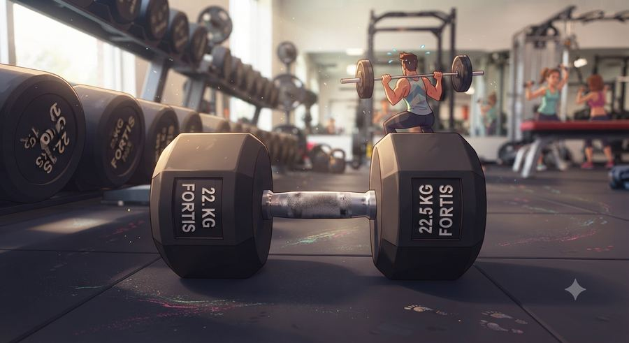
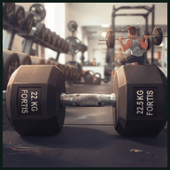

Abriste el enlace que te llegó por correo. Escribe la contraseña que quieras usar de ahora en adelante.

Registra tus series, tu esfuerzo y tu comida. La app aprende de tu historial y va ajustando las cargas contigo.
Crea una cuenta para que tus datos se guarden y los veas desde cualquier dispositivo.
Solo para que la app te salude por tu nombre. En cualquier publicación los datos van anonimizados.
Pésate al despertar, sin ropa. La cintura se mide de pie, relajado, sin meter la panza.
De esto dependen tus calorías y la curva que vas a seguir.
Sé realista: más vale sostener tres días ocho semanas que abandonar cinco a la tercera.
Calculado con tus datos. Podrás ajustarlo después desde la pestaña Datos.
Este proyecto usa los registros de entrenamiento para entrenar y evaluar un modelo predictivo. Tu participación es voluntaria y puedes retirarla cuando quieras desde la pestaña Datos.

—
Lo que deberías capturar todos los días al despertar.
—
Los pesos de la última vez aparecen arriba de cada ejercicio. Tu trabajo es igualarlos o superarlos.
Registra la rutina que ya sigues, venga de donde venga: tu entrenador, tu gimnasio o la tuya de siempre. La app la compara con las del catálogo y te dice qué tan equilibrada está.
Peso máximo y 1RM estimado (fórmula Epley) por ejercicio.
Al despertar, después del baño, sin ropa. Solo importa el promedio de 7 días.
Domingos. De pie, relajado, sin meter la panza, al exhalar normal.
Sin esto, el modelo no puede relacionar tu progreso en pesas con lo que comes. Es la variable que distingue este proyecto.
Lo importante no son los metros: es cuánto tardas en hacerlos.
Promedio semanal contra la curva del plan.
La métrica que mejor refleja la grasa abdominal.
Toneladas movidas por semana (peso × reps sumado). Si cae mucho, estás perdiendo capacidad de trabajo.
Sin cuenta, tus datos solo viven en este navegador. Con cuenta se guardan en la nube y los ves desde cualquier dispositivo.
Actívalas solo si las vas a usar. Menos pestañas, menos ruido.
Este proyecto usa datos de entrenamiento para entrenar un modelo predictivo. Tu participación es voluntaria y puedes retirarla cuando quieras.
Tus datos viven en este navegador. Si borras el historial o cambias de compu, se pierden. Exporta cada mes.
Elimina permanentemente todos tus registros. No se puede deshacer.